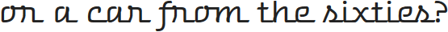
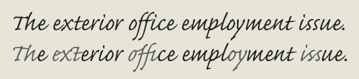
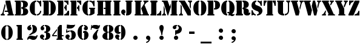
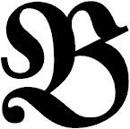
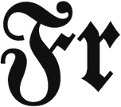
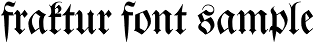
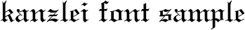
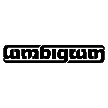
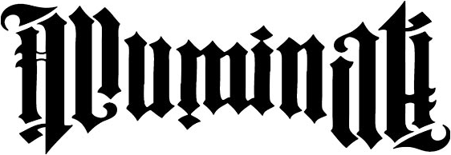

Recognition of virtually any font is possible if the system manages to isolate a sufficient number of characters. OCR software does not read extremely stylized, “script”-like fonts, where character segmentation is impossible.
Is this a wedding invitation…

(Calligraphic typefaces that look hanwritten tend to imitate the natural joins (“ligatures”) of handwritten text.)
Nor does it read broken, “army-style” fonts.

Army-style stencil font
Gothic fonts — often called “Fraktur” or “blackletter” and to a minor extent called “gebrochene Schriften” (which is German for “broken scripts”) — require special OCR software. The challenge here is that every single character is actually a highly stylized shape! Blackletters get called “broken scripts” because of the ornamental curls that “break up” a character. Furthermore, thick vertical strokes totally dominate the letter shapes with only minimal horizontal strokes to link them together…
 
To recognize blackletters, the diamond shapes you find in the letters are often a dead giveaway.
In the movies, those fonts are always associated with nazi Germany. Think Indiana Jones, for instance! Not that this is the historic truth: the printed blackletters you see here are an imitation of the Gothic fonts as they were handwritten in manuscripts. The first blackletters appeared in French manuscripts in the 11th century and were actually slow to spread in German-speaking areas. Blackletters were widely used throughout Western Europe in manuscripts from 1150 to 1500. The cultural revolution called Renaissance put an end to their dominant role. The Humanists called these fonts “gothic”, which means “barbaric”: they believed it was a barbaric script!
We associate Gothic typefaces with Germany because the Germans went on using those fonts when they had been abandoned for centuries by the other languages! The estimate is that Gothic fonts were used in 80% of the printed German documents from 1800 to 1941. In 1942, the Nazi government in fact abandoned the then dominant Fraktur font it is now unavoidably associated with…
Recognition of these fonts is all the more difficult because there are many variations — and each Gothic font really does look different. Blackletters evolved differently in various regions; these are the most common Gothic typefaces.


Actually, these fonts were adapted to the modern needs. The Gothic fonts as you’ll find them in medieval manuscripts did not have any dots on the “i” and “j” characters. And the vertical strokes (“minims”) of the characters were even less connected to each other than nowadays, wich made it very difficult to distinguish the letters “i”, “m”, “n” and “u”. Scholars have detected the following passage in a Latin manuscript from the 14th century.
Difficult to read — even for human beings, isn’t it? Here’s the text in a legible font: “Mimi numinum niuium minimi munium uini muniminum imminui uiui minimum uolent”. (And the translation of this proverb is: “The smallest mimes of the gods of snow do not wish at all in their life that the great duty of the defences of the wine be diminished.”) I’m not kidding you!
Given the high similarity of the various Gothic symbols, it can be no surprise that they’re used extensively in ambigrams. Those are words that you can read the same way when rotated by 180°! The American typographer John Langdon basically invented them.
 
John Langdon is the reason why the symbology professor of the Dan Brown detective novels is called Robert Langdon!
Should you need to recognize documents with blackletters, check if the font you want to read is supported before you buy that OCR software! The rare OCR software that does read Gothic fonts is usually limited to the Fraktur and Schwabacher fonts. (Although the words “Gothic”, “blackletter” and “Fraktur” commonly get used as synonyms, strictly speaking, they are not the same concepts. “Fraktur” is but a specific German Gothic font among many others… Not to mention that this font was actually created in the 16th century on demand of Emperor Maximilian — the Gothic fonts had already been abandoned in the non-German regions by then!)
Let’s take things step by step, shall we? — Take us where the rainbow ends! — B is for binarize — What gets read and what doesn’t — Lines, lineskew and drop letters — Segmenting words and characters — Stylized fonts — Why is OCR software called omnifont? — What’s the role of linguistics in the OCR process?
Home page — Intro — Scanners — Images — History — OCR — Languages — Accuracy — Output — BCR — Pen scanners — Sitemap — Search — Feedback – Contact